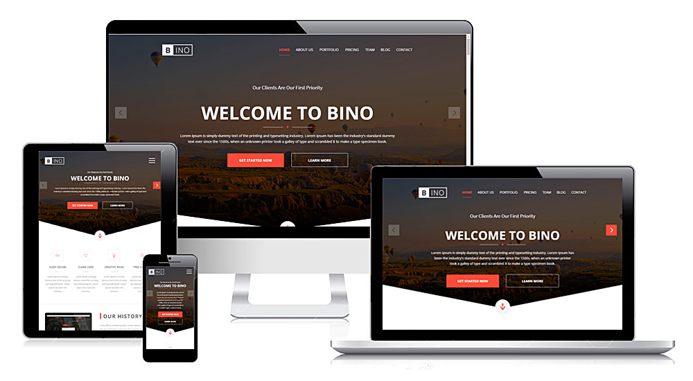
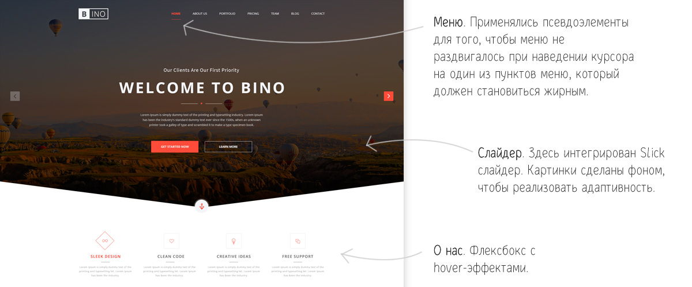
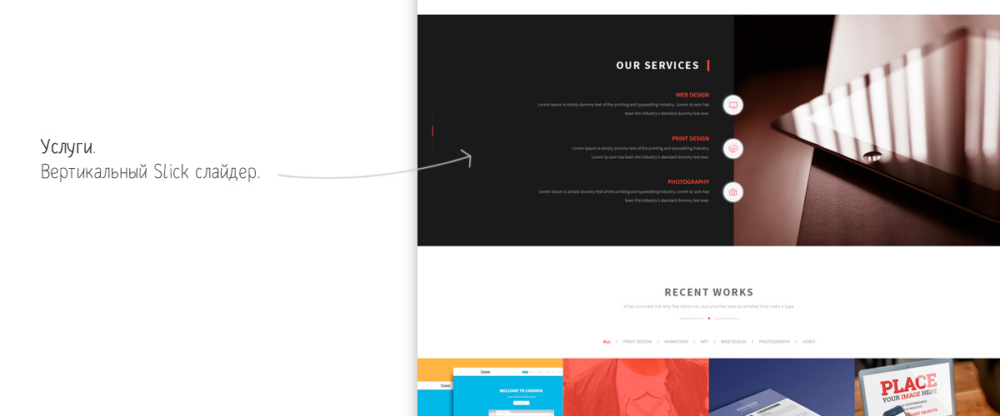
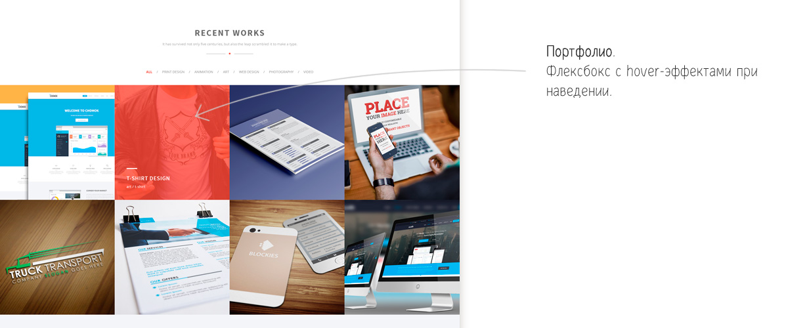
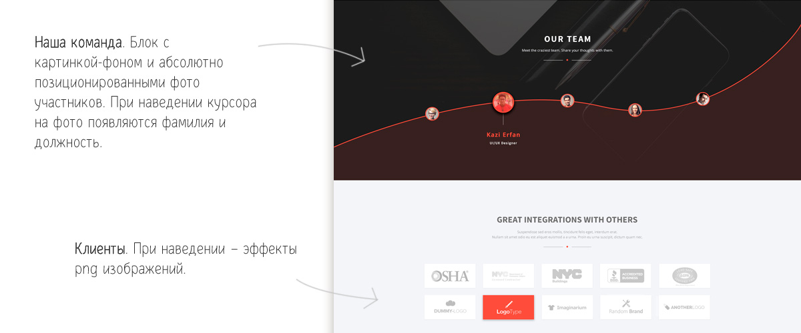

Верстка лендинга
Задача:
Сверстать посадочную страницу, используя psd макет (png картинка макета)
Результат работы:
В работе неоднократно используются css анимации, флексбоксы и фигуры, созданные с помощью css. Реализованы плавная прокрутка, кнопка Вверх и меню-гамбургер. Благодаря адаптивной верстке, страница хорошо выглядит на экранах компьютеров, планшетов и смартфонов.




